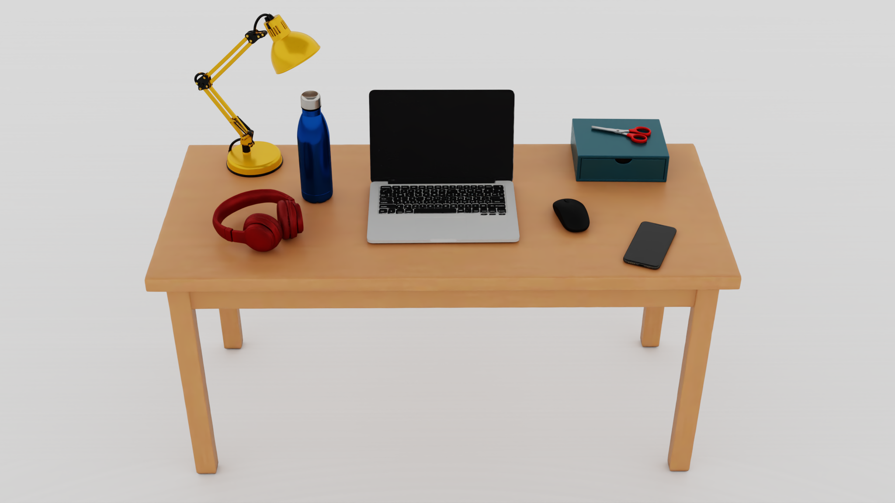

ArticuTable: Generating Instance-Level Interactive Rigid-Articulated 3D Tabletop Scenes from a Single Image
arXiv:2610.05249 · 2026
One image. An interactive world.
Rotate the tabletop, inspect each object, and control its recovered joints.

Click an object or choose it above, then drag its joint controls. Play follows the Isaac Sim video's joint trajectory. The poster and videos show the original simulator rendering; this WebGL view uses different lighting.
Abstract
Embodied agents benefit from 3D environments that combine visual fidelity to real-world observations with physical interactivity. Existing single-image tabletop reconstruction methods recover plausible scene geometry but typically represent objects as monolithic rigid bodies, limiting interaction to whole-object rigid motion and precluding executable part-level articulation. Meanwhile, recovering a scene layout consistent with the input view remains challenging because a single observation may admit multiple plausible pose-scale configurations.
We present ArticuTable, a single-image 3D tabletop reconstruction framework that recovers both executable part-level articulation and an input-view-consistent scene layout. For object modeling, generation-robust articulation modeling (GRAM) combines joint fitting guided by a multimodal large language model with semantic state reasoning to recover reliable joint parameters and valid motion ranges from imperfect proxy meshes. For scene layout, progressive semantic-geometric scene registration (PSGSR) progressively narrows the pose-scale search space using complementary metric, planar, and input-view constraints. We also contribute ArticuTable-100, a curated collection of 100 simulation-ready tabletop scenes. Extensive evaluation, including a user study, demonstrates strong performance across visual fidelity, scene consistency, articulation quality, physical plausibility, and simulation readiness.
Scenes in Motion
Switch between six additional simulation-ready scenes without opening a wall of video players.
Method
A single-image pipeline for reconstructing articulated assets and registering them in a consistent 3D scene.

Generation-Robust Articulation Modeling
GRAM turns imperfect proxy meshes into executable assets by recovering joint structure, parameters, and motion ranges.
Progressive Scene Registration
PSGSR aligns object position, orientation, and scale through metric, planar, and input-view constraints.
Reconstruction Results
Comparisons on generated and real-world tabletop images.


Interactive and simulation-ready

Quantitative Evaluation
Scene reconstruction, articulated assets, component ablations, and human preference. Values below reproduce Tables 1–5 of the paper.
Scene-level reconstruction
ArticuTable leads on input-view consistency, perceptual assessment, and physical validity.
| Method | LPIPS ↓ | DINOv2 ↑ | CLIP ↑ | VF ↑ | IA ↑ | PP ↑ | Avg. ↑ | OR ↓ | ColO ↓ | ColS ↓ |
|---|---|---|---|---|---|---|---|---|---|---|
| ACDC | 0.4447 | 0.5135 | 0.8058 | 3.927 | 1.920 | 3.880 | 3.242 | 4.298 | 1.5302% | 32.00% |
| Gen3DSR | 0.2716 | 0.5704 | 0.8386 | 2.220 | 4.680 | 4.013 | 3.638 | 3.349 | 11.3322% | 66.67% |
| MIDI | 0.4302 | 0.6469 | 0.8668 | 2.787 | 2.933 | 2.360 | 2.693 | 4.142 | 37.9430% | 99.33% |
| TabletopGen | 0.3935 | 0.7788 | 0.8908 | 5.380 | 4.860 | 5.893 | 5.378 | 2.162 | 1.4488% | 16.00% |
| ArticuTable | 0.2398 | 0.8991 | 0.9265 | 5.867 | 6.253 | 6.600 | 6.240 | 1.049 | 0.3819% | 10.67% |
VF: visual fidelity; IA: input alignment; PP: physical plausibility; OR: overall rank. ColO and ColS report collision rates.
Articulated asset quality
Lightwheel benchmark results, grouped by image- or mesh-conditioned input.
| Method | Input | Training-free | Prec. ↑ | Rec. ↑ | Rest mIoU ↑ | Art. gIoU ↑ | OC ↓ | AE ↓ | LE ↓ |
|---|---|---|---|---|---|---|---|---|---|
| SINGAPO | Image | – | 37.60 | 25.40 | 0.182 | −0.263 | 0.030 | 30.30° | 0.077 |
| PAct | Image | – | 24.60 | 16.80 | 0.092 | −0.434 | 0.056 | 42.90° | 0.188 |
| PhysX-Anything | Image | – | 20.30 | 19.20 | 0.093 | −0.459 | 0.064 | 38.80° | 0.123 |
| URDF-Anything+ | Image | – | 70.70 | 23.90 | 0.260 | −0.138 | 0.033 | 50.40° | 0.128 |
| Articulate AnyMesh | Mesh | ✓ | 89.20 | 42.50 | 0.452 | 0.158 | 0.010 | 21.70° | 0.043 |
| URDF-Anything+ | Mesh | – | 77.50 | 27.40 | 0.267 | −0.110 | 0.026 | 49.90° | 0.111 |
| Particulate | Mesh | – | 89.90 | 51.50 | 0.576 | 0.305 | 0.009 | 20.90° | 0.040 |
| GRAM | Mesh | ✓ | 91.15 | 46.54 | 0.564 | 0.283 | 0.014 | 17.26° | 0.034 |
GRAM ablation
| Component | Metric | Enabled | Disabled | Reduction |
|---|---|---|---|---|
| MLLM-guided joint fitting | AE ↓ | 17.17° | 40.06° | 57.1% |
| LE ↓ | 0.0417 | 0.0527 | 20.9% | |
| Semantic state reasoning | Art. PC ↓ | 0.2502 | 0.2605 | 3.9% |
| OC ↓ | 0.0152 | 0.0176 | 13.6% |
PSGSR ablation
| Variant | Top | Input | SASPS | LPIPS ↓ | DINOv2 ↑ | CLIP ↑ |
|---|---|---|---|---|---|---|
| Point-cloud only | – | – | – | 0.3439 | 0.8102 | 0.9077 |
| w/o Top-view | × | ✓ | – | 0.2564 | 0.8702 | 0.9210 |
| Top-view only | ✓ | × | × | 0.3235 | 0.8586 | 0.9156 |
| w/o SASPS | ✓ | ✓ | × | 0.2543 | 0.8762 | 0.9205 |
| Full model | ✓ | ✓ | ✓ | 0.2398 | 0.8991 | 0.9265 |
User study
59 participants; each method received 590 valid rankings.
| Metric | ACDC | Gen3DSR | MIDI | TabletopGen | ArticuTable |
|---|---|---|---|---|---|
| Mean rank ↓ | 4.08 | 3.75 | 3.75 | 2.24 | 1.17 |
| Median rank ↓ | 4 | 4 | 4 | 2 | 1 |
| First-place rate ↑ | 0.17% | 1.02% | 1.02% | 12.20% | 85.59% |
| Top-2 rate ↑ | 6.61% | 11.86% | 8.81% | 74.58% | 98.14% |
Citation
@misc{lv2026articutablegeneratinginstancelevelinteractive,
title={ArticuTable: Generating Instance-Level Interactive Rigid-Articulated 3D Tabletop Scenes from a Single Image},
author={Kai Lv and Yibo Yin and Lijun Guo and Heng Fan and Kaihao Zhang and Xingping Dong},
year={2026},
eprint={2610.05249},
archivePrefix={arXiv},
primaryClass={cs.CV},
url={https://arxiv.org/abs/2610.05249}
}